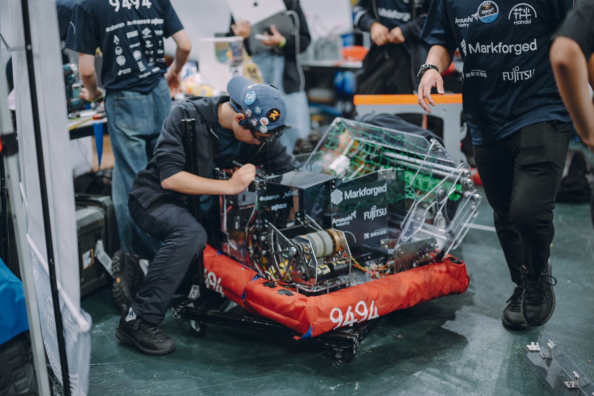
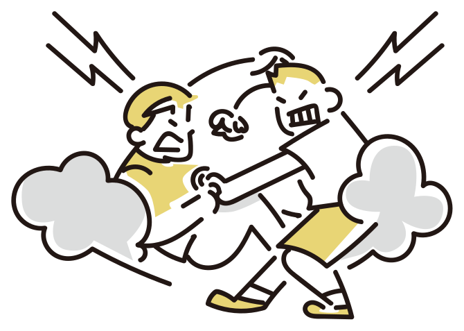
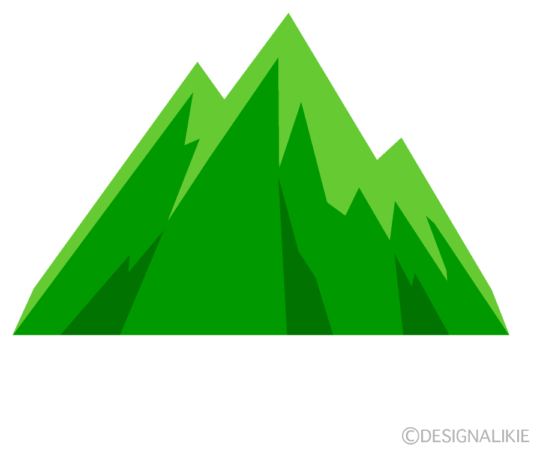
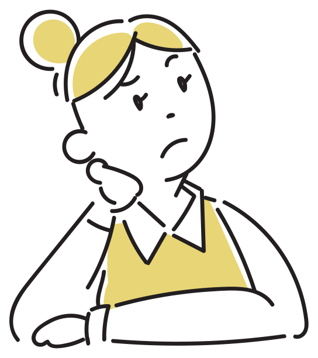
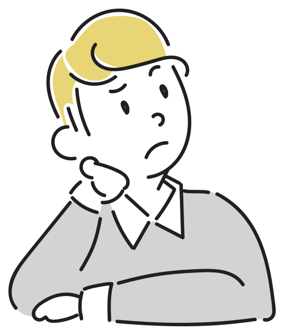

口頭発表資料｜GLM-4.7による二者協力ゲーム・90ゲームの探索的評価
神山まるごと高専 本科2年
鈴木陽向
複数人での意思決定において、対立の理由を整理し、合意形成を支える枠組み HIVC-D を提案する。
同じ目的を持ちながら、見えている情報や優先基準が異なる二者の議論。
情報・価値・実行可能性を順に確認すると、成果と合意品質は改善するか。
本発表は現行実装を90ゲームで評価した結果を報告する。
人同士の会議をすぐに再現できなくても、LLMの役割演技を使えば、異なる情報と判断基準を持つ二者の合意手続きを反復評価できる。
同じゲームとseedを使い、追加する議論手続きだけを変えて比較する。
LLMが実際の人間の感情・心理的安全性を代替できるかは、この実験だけでは判断できない。
自主制作の場で、意見の対立をどう建設的な議論につなげるか。
学生が主体的に制作・活動を進めている。

活動の方針や進め方を、仲間と話し合う。
同じ活動でも、進め方や優先順位が分かれる。
どうすれば
安心した議論を作れるか？

目標・情報・判断基準・能力の違いを分け、必要な介入を考える。
何を達成したいかを共有している。
判断に必要な事実を共有している。
選択肢を比較するときの優先基準を共有している。
選択した行動を実行できる。
原発表の出発仮説。これらは厳密な数学的「十分条件」として検証済みではなく、対立を整理するための作業仮説である。



Aは地形を見て「赤の方が安全」と言う。
Bの目的、情報、優先基準、体力上の事情は分からない。
元資料p21–31の人物と山のイラストを再利用して再構成。
「赤の方が斜度が小さい」対「青ルートの気分」だけでは、比較する基準が共有されない。
| 確認する違い | 山登りでの問い | 介入 |
|---|---|---|
| ゴール | 二人とも山頂を目指している？ | 目的を確認・共有する |
| 情報 | 地形・天候を同じように見ている？ | 根拠を共有する |
| 判断基準 | 安全性と所要時間のどちらを優先する？ | 優先基準をすり合わせる |
| 能力 | その道を全員が歩ける？ | 役割やルートを調整する |
G：共通のゴールを確認 — 本実験では「二者で深海施設から生還する」を共有した状態から始める。
目的は共通という実験条件の下で、各役割の観測情報（I）、価値判断（V）、実行可能性（A）を対話で確認する。初期案が衝突した場合、V*は両者の明示的受諾で成立する。
四つの条件のうちGは共有済みとし、I・V・Aの調整を実験した。
同じゲーム、同じモデル、対応するseedで3つの実験群を評価。
共通の役割・状態・ゲーム規則・出力形式のみを提示する。
情報確認、リスクと勝利寄与の比較、根拠に応じた譲歩、実行前確認を促す。
情報共有、明示的なV*提案・受諾、実行可能性確認を行う。
元資料のA/B/Cは順に hivc_d / consulting / control に対応する。
Z.ai APIの GLM-4.7 を二つの役割に使用。
モデル名は元PDFの表記から実際の実験記録に合わせて修正。
NASAゲームは既知の正解が広く流通しており、モデルが記憶した答えで解く可能性がある。独自の資源管理・部分観測ゲームで、対話による意思決定を評価した。
2人の乗員が協力し、5ターン以内に生還する。
通信を復旧して救助を待つ／脱出艇を整備して自力で脱出する。
安全重視と勝利へ向けた迅速な行動が対立しうる設計。
| 資源 | 役割 |
|---|---|
| 酸素・電力 | 0以下で敗北 |
| 船体損傷・浸水 | 5以上で敗北 |
| 通信・脱出艇 | 勝利条件の進捗 |
| 士気 | 終端スコアに反映 |
「異常なし」22%。全行動が確実に敗北となるイベントは再抽選。
| 記号 | 行動 | 主な効果 |
|---|---|---|
| A | 酸素供給を安定化 | 酸素 +3、電力 −1 |
| B | 発電系を修理 | 電力 +3、25%で船体損傷 +1 |
| C | 通信アンテナを修理 | 通信 +1、電力 −1、25%で浸水 +1 |
| D | 浸水区画を封鎖 | 浸水 −2、酸素 −1 |
| E | 脱出艇を整備 | 整備度または健全性 +1、電力 −1 |
| F | 自力脱出を実行 | 条件不足なら敗北 |
通信窓・浸水イベントではC/Dの効果が変わる。各行動の詳細は元のゲームルール7枚に記載。
5ターン終了まで生存しても勝利条件を満たさなければ「生存タイムアウト」。勝率と生存率は別に数える。
alpha：船体損傷・浸水など安全側の診断。
beta：通信・脱出艇・酸素・電力など脱出側の診断。
相手の診断を直接見られないため、情報共有が必要。
| ambiguous | 進路が不明確 |
| comms_favored | 通信が有利 |
| escape_favored | 脱出が有利 |
| route_reversal | 途中で有利な進路が逆転 |
3条件 × 30ゲーム ＝ 90ゲーム。seed 42–71を各条件で共有し、実行順はLatin squareで入れ替える。
勝率、生存率、終端スコア（勝利 +1000、敗北 −200等の重み付き和）。
行動合意率、fallback率、平均regret、無効出力・再試行、V受諾。
regretは24回のrolloutで推定した最善行動とのQ値差。真の長期最適値ではない。
成果、合意、手続き品質を分けて読む。
| 条件 | 勝率 | 生存率 | 終端スコア | 平均regret | 合意率 | fallback率 |
|---|---|---|---|---|---|---|
| control | 46.7% | 93.3% | 744.8 | 100.8 | 94.0% | 6.0% |
| consulting | 60.0% | 100% | 935.3 | 119.0 | 95.3% | 4.7% |
| hivc_d | 46.7% | 100% | 740.2 | 127.3 | 78.4% | 21.6% |
consultingが勝率・終端スコアで最高。
hivc_dは行動合意率が低く、fallbackが多い。
勝利数は14 / 18 / 14。生存率100%の二条件は敗北0、controlは敗北2。
| 比較 | 指標 | 平均差 | 95% CI | p値 |
|---|---|---|---|---|
| hivc_d − control | 終端スコア | −4.7 | [−172.3, 158.5] | 0.93 |
| hivc_d − control | 合意率 | −15.3pt | [−21.5, −9.3] | 0.0003 |
| hivc_d − consulting | 終端スコア | −195.2 | [−390.2, −4.5] | 0.036 |
| hivc_d − consulting | fallback率 | +17.0pt | [11.7, 22.2] | <0.001 |
| consulting − control | 終端スコア | +190.5 | [56.2, 345.2] | 0.026 |
勝率の二値比較はいずれも有意ではない。検出力設計と多重比較補正のない探索的分析として読む。
| シナリオ | control | consulting | hivc_d |
|---|---|---|---|
| ambiguous（各8） | 0% | 37.5% | 12.5% |
| comms_favored（各7） | 57.1% | 57.1% | 57.1% |
| escape_favored（各7） | 57.1% | 71.4% | 42.9% |
| route_reversal（各8） | 75.0% | 75.0% | 75.0% |
差が見えるのは不明確な進路と脱出有利の局面。
各セル7–8ゲームの事後分析。別seedと別環境での追試が必要。
必要 87ターン → 受諾 52ターン（59.8%）
counter 52件、V交渉メッセージ234件。
受諾あり27ゲームの終端スコア775.2、なし3ゲームは425.0。後者はn=3で因果は判断できない。
| 条件 | 無効出力 | 再試行 |
|---|---|---|
| control | 11 | 24 |
| consulting | 14 | 25 |
| hivc_d | 4 | 18 |
hivc_dのV測定tokenはcontrolより+138.4（p=0.02）。明示的手続きは出力を安定させたが、成果優位には結びつかなかった。
成立条件、価値から行動への接続、議論予算を検討する。
対立時はV*への明示的acceptが必要。87ターン中52ターンで受諾。形式を通過しない決定はfallbackに分類される。
「安全重視」に合意しても酸素・電力・浸水への対処が競合する。投票が振動し、行動が決まらない。
代表例：seed 63・turn 1で酸素優先のV*に合意後、AとBで投票が振動してfallback。採用Aに対し推定最善はC、regret 966.25。
形式的受諾と実質的な譲歩が一致しない例もある。V交渉は限られた対話予算を使う。
hivc_dは敗北0・生存率100%。合意しない場合に安全候補へ置き換えるfallbackが、致命的失敗を避けた可能性がある。
勝率はcontrolと同じ46.7%。安全優先が通信・脱出の機会を逃す例がある。合意率だけでは判断の正しさを測れない。
形式的なV*を設けず、事実・敗北リスク・勝利寄与・資源・次ターンの選択肢を比較した条件が、最高の勝率60.0%と終端スコア935.3を示した。
現行HIVC-Dは無効出力・再試行を減らした一方、勝率・終端スコア・regretの優位は確認できず、行動合意率は下がった。
V整合とA確認の間で、各候補の予測状態差分・即時失敗条件・勝利進捗・機会費用を表で比較する。
単一モデル・単一ゲーム・単一役割ペア。検出力設計と多重比較補正なし。人間の心理的安全性への外挿は未検証。
検証対象は今回のI→V→A実装。HIVC-Dの概念一般を否定する結論ではない。
問い：価値の合意を、どう具体的な行動比較へつなげるか。
神山まるごと高専 本科2年 鈴木陽向
出典：HIVCD_GLM47_INTERIM.md、analysis/glm47-final-90/、既存のゲームルール・実験結果・合意率分析スライド
設定・評価方法・集計値を、質疑用にまとめた資料。
| 項目 | 設定 |
|---|---|
| モデル / 提供元 | GLM-4.7 / Z.ai API。alphaとbetaの両役割に同一モデルを使用 |
| 生成設定 | temperature 0.2、sampling無効、1応答256 token上限 |
| 試行 | control / consulting / hivc_d 各30ゲーム、seed 42–71、計90ゲーム |
| 対応設計 | 同一seedを3条件で共有。条件順はLatin squareで入れ替え |
| 実行 | 単一の有料APIアカウントを共有、最大3並列。GPUサーバー上で実験を起動 |
| 評価器 | 候補行動ごとに24 rolloutでQ値を推定 |
| データ整合 | 中断・再開runを結合し、condition × seedの重複なし・終端記録各1件を確認 |
設定：configs/zai_glm47_90games_single_key_parallel.yaml。分析：scripts/analyze_glm47_final_paper.py。
役割・観測・規則・出力形式・対話予算は同じ。追加のFRAMEWORK文面だけを変更。hivc_dでは初期行動が対立した場合にV*提案と両者の明示的受諾を求める。
出典：HIVCD_GLM47_INTERIM.md §3.4–3.6。
| 変数 | 条件 |
|---|---|
| oxygen / power | 各0以下で敗北 |
| hull_damage / flooding | 各5以上で敗北 |
| communication | 3以上で救助要請 |
| pod_readiness / integrity | 各2以上で脱出条件 |
| morale / severe_risk | 終端スコアへ反映 |
各ターン開始時にoxygenとpowerが各1減少。
| 異常なし | 22% | 外圧上昇 | 10% |
| 浸水増加 | 10% | 通信窓 | 10% |
| 乗員動揺 | 8% | 中継器短絡 | 10% |
| 脱出艇区画漏水 | 10% | 海流変化 | 8% |
| 非常用電源発見 | 7% | 船体亀裂拡大 | 5% |
通常シナリオは初期値に±1の揺らぎ。route_reversalのみ固定イベント列。
| 要素 | 重み | 要素 | 重み |
|---|---|---|---|
| 勝利 / 敗北 | +1000 / −200 | 酸素 / 電力 | +30 / +20 |
| 船体損傷 / 浸水 | −80 / −70 | 通信 | +50 |
| 艇整備度 / 健全性 | +80 / +60 | 士気 | +5 |
| 経過turn | −10 | 危険回数 | −25 |
生存タイムアウトには勝利加点・敗北減点を付けない。
検出力設計と多重比較補正は事前登録していない。regretは内部評価器による推定値。
| 条件 | ゲーム | 勝利 | 生存timeout | 敗北 | 終端スコア | 平均regret |
|---|---|---|---|---|---|---|
| control | 30 | 14 | 14 | 2 | 744.8 | 100.8 |
| consulting | 30 | 18 | 12 | 0 | 935.3 | 119.0 |
| hivc_d | 30 | 14 | 16 | 0 | 740.2 | 127.3 |
| 条件 | turn | 合意決定 | fallback | 合意率 | 無効出力 | 再試行 | 議論token/ゲーム |
|---|---|---|---|---|---|---|---|
| control | 133 | 125 | 8 | 94.0% | 11 | 24 | 3062.2 |
| consulting | 129 | 123 | 6 | 95.3% | 14 | 25 | 3073.2 |
| hivc_d | 139 | 109 | 30 | 78.4% | 4 | 18 | 3040.0 |
出典：analysis/glm47-final-90/condition_summary.csv。合意率は合意決定 / turn。
| 比較（前者 − 後者） | 指標 | 平均差 | bootstrap 95%区間 | p値 |
|---|---|---|---|---|
| hivc_d − control | 終端スコア | −4.7 | [−172.3, 158.5] | 0.929 |
| hivc_d − consulting | 終端スコア | −195.2 | [−390.2, −4.5] | 0.0357 |
| consulting − control | 終端スコア | +190.5 | [56.2, 345.2] | 0.0258 |
| hivc_d − control | 行動合意率 | −15.3pt | [−21.5, −9.3] | 0.00030 |
| hivc_d − consulting | 行動合意率 | −16.7pt | [−23.2, −10.0] | 0.00036 |
| hivc_d − control | V測定token | +138.4 | [38.8, 242.3] | 0.0197 |
勝利のexact McNemar p値：hivc_d対control 1.00、hivc_d対consulting 0.289、consulting対control 0.125。
出典：analysis/glm47-final-90/paired_comparisons.json。連続指標のp値はWilcoxon検定。
| シナリオ | 条件 | ゲーム | 勝利 | 終端スコア | 平均regret | fallback率* |
|---|---|---|---|---|---|---|
| ambiguous | control | 8 | 0 | −43.1 | 80.5 | 7.5% |
| ambiguous | consulting | 8 | 3 | 458.1 | 60.7 | 5.0% |
| ambiguous | hivc_d | 8 | 1 | 142.5 | 64.0 | 25.6% |
| comms_favored | control | 7 | 4 | 955.7 | 58.9 | 2.9% |
| comms_favored | consulting | 7 | 4 | 903.6 | 150.9 | 2.9% |
| comms_favored | hivc_d | 7 | 4 | 875.7 | 120.6 | 21.4% |
| escape_favored | control | 7 | 4 | 805.7 | 101.0 | 5.7% |
| escape_favored | consulting | 7 | 5 | 1097.9 | 82.7 | 0.0% |
| escape_favored | hivc_d | 7 | 3 | 650.0 | 147.3 | 17.9% |
| route_reversal | control | 8 | 6 | 1295.0 | 157.5 | 5.0% |
| route_reversal | consulting | 8 | 6 | 1298.1 | 181.2 | 7.5% |
| route_reversal | hivc_d | 8 | 6 | 1298.1 | 178.9 | 17.5% |
*ゲーム別fallback率の平均。各セル7–8ゲームの探索的比較。出典：analysis/glm47-final-90/scenario_summary.csv。
| 指標 | 件数 |
|---|---|
| V整合が必要なターン | 87 |
| V*受諾ターン | 52（59.8%） |
| counter / V交渉メッセージ | 52 / 234 |
| 受諾が一度以上あるゲーム | 27 / 30 |
| 受諾 | n | スコア | regret | 勝率 |
|---|---|---|---|---|
| あり | 27 | 775.2 | 115.5 | 48.1% |
| なし | 3 | 425.0 | 233.0 | 33.3% |
「なし」は3ゲームのみ。難易度の交絡を除けない。
document/paper/analysis/glm47-final-90/：games.csv、condition_summary.csv、scenario_summary.csv、hivcd_v_summary.csv、paired_comparisons.json、provenance.json。